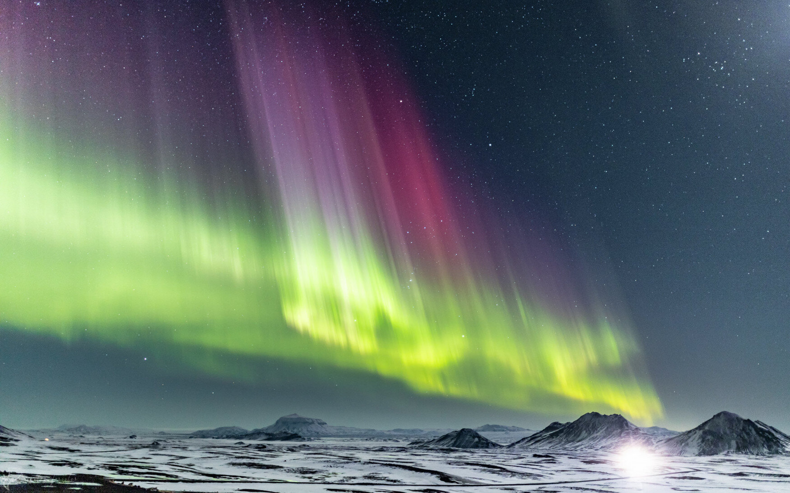

Aurora Borealis
Spectacular Light Show!
The Northern Lights, also known as the Aurora Borealis, are one of the most captivating natural phenomena that attract tourists from around the world. The Northern Lights create a breathtaking light show in the night sky, featuring vibrant hues of green, pink, purple, and sometimes even red and blue.The locations where the Northern Lights are visible are often remote and surrounded by stunning natural landscapes.
Buy Tickets More infoScientific Interest
Apart from the tourist appeal, the Northern Lights also attract scientists and researchers interested in studying the Earth's magnetosphere and solar activity. Some destinations offer educational programs and workshops for tourists interested in learning more about the science behind the Aurora Borealis.
Studying the Northern Lights on Earth also contributes to our understanding of auroras on other planets. For example, similar phenomena have been observed on Jupiter, Saturn, and even Mars. Comparing these observations helps scientists uncover common principles of magnetospheric processes across different celestial bodies.
Whether for a romantic getaway, an adventurous winter holiday, or a photography expedition, the Northern Lights continue to be a bucket-list attraction for travelers worldwide.